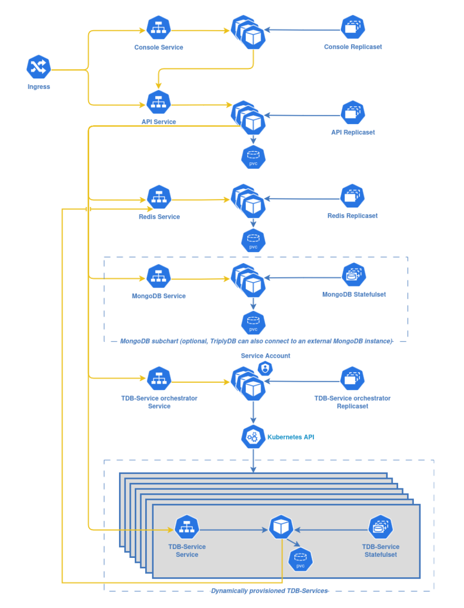

TriplyDB: On-Premise Deployment¶
This document guides you through deploying TriplyDB on your own Kubernetes cluster. It is intended for someone with Kubernetes experience who has permission to create resources in the target namespace.
Before you begin¶
Make sure you have received the following from Triply:
- A license file (
key.license) to activate your TriplyDB instance. The license is linked to a specific API domain — theapi.domainvalue in your configuration must match the domain for which the license was created. - A registry access token to pull Helm charts and container images.
Make sure the following is available on your cluster:
- A Kubernetes namespace in which TriplyDB will run.
- An Ingress controller (see Prerequisites).
- HTTPS egress to
77.73.225.176/28from the namespace, for periodic license validation.
Overview¶

TriplyDB consists of several components running inside a Kubernetes namespace:
- The Console provides the web UI. It proxies API requests through the
/_apipath. - The API Server handles all application logic, stores metadata in MongoDB, and uses Redis for event signaling between worker processes. API data (linked data and assets) is stored on persistent volumes.
- MongoDB stores instance metadata. It can be deployed as a Bitnami subchart, as an externally managed instance, or using the MongoDB community operator.
- Redis handles event signaling between API worker processes and other pods.
- The Orchestrator interacts with the Kubernetes API to dynamically create and remove TDB-Services (e.g. Virtuoso, Jena, or ElasticSearch) and to manage background jobs such as long-running SPARQL queries.
- Several CronJobs run periodically for maintenance (cleanup, graph optimization, query cache refresh, and license validation).
- Optional TDB services are pods created by the API pods whenever a user starts a service (i.e. Virtuoso or Elastic) for a dataset in TriplyDB. These pods are not part of the helm deployment but will be created dynamically when requested by the user and permitted by the license.
Prerequisites¶
RBAC¶
You need at least an Admin role within the namespace where TriplyDB will be deployed.
Ingress Controller¶
TriplyDB requires an Ingress controller to be available on the cluster. TriplyDB strives to support any Ingress controller. The Ingress manifests have been tested with Ingress NGINX and HAProxy, but other controllers should work as well. The request methods used by TriplyDB are GET, POST, PATCH, and DELETE.
Network¶
In case of network or firewall restrictions, you will need to allow HTTPS egress traffic from the namespace to the IP range 77.73.225.176/28. This is required for TriplyDB to periodically validate your license key.
Configuration¶
Before installing TriplyDB, you need to prepare a values.yaml file. Below is a minimal starting point showing the values you will need to customize for your environment:
# The api.domain must match the domain for which your license was created
api:
domain: api.example.com # Domain where the API server is accessed
persistentVolumeClaim:
storageClassName: my-storage-class
size: 10Gi
storagePersistentVolumeClaim:
storageClassName: my-storage-class
size: 10Gi
console:
domain: example.com # Domain where the Console is accessed
redis:
persistentVolumeClaim:
storageClassName: my-storage-class
size: 1Gi
mongodb:
deploymentStrategy: subChart
persistentVolumeClaim:
storageClassName: my-storage-class
size: 3Gi
mongodbSubChart:
enabled: true
tdbServices:
persistentVolumeClaim:
storageClassName: my-storage-class
kubernetesApi:
cidr: 10.96.0.1/32 # CIDR of your cluster's Kubernetes API
port: 443
ingress:
controller: nginx # "nginx" or "haproxy"
sslMode: behind # "behind", "terminate", or "none"
The sections below describe each configuration area in detail. For a complete reference of all available options, run:
helm show readme triply/triplydb --version <version>
Domains (required)¶
You must configure the domain names for both the API server and the Console:
api:
domain: api.example.com
console:
domain: example.com
The api.domain value must match the domain for which your TriplyDB license was created. If the domain does not match, the license validation will fail.
Ensure that DNS records for both domains point to your Ingress controller.
Persistent storage (required)¶
TriplyDB requires persistent storage for API data, Redis, MongoDB, and TDB-Services. You must specify a storage class and size for each persistent volume claim. The sizes of the PVCs used by the TDB-Services are determined dynamically based on the data that will be loaded by the service.
api:
persistentVolumeClaim:
storageClassName: my-storage-class
size: 10Gi
storagePersistentVolumeClaim:
storageClassName: my-storage-class
size: 10Gi
redis:
persistentVolumeClaim:
storageClassName: my-storage-class
size: 1Gi
mongodb:
persistentVolumeClaim:
storageClassName: my-storage-class
size: 3Gi
tdbServices:
persistentVolumeClaim:
storageClassName: my-storage-class
Ingress¶
The ingress configuration controls how external traffic reaches TriplyDB:
ingress:
controller: nginx # Ingress controller type: "nginx" or "haproxy"
className: my-ingress # Ingress class name (if required by your cluster)
sslMode: behind # "behind" (proxy terminates SSL),
# "terminate" (TriplyDB terminates SSL), or "none"
annotations: {} # Custom annotations, e.g. for cert-manager
If you use a TLS certificate manager such as cert-manager, you can specify the issuer through annotations:
ingress:
annotations:
cert-manager.io/issuer: my-issuer
MongoDB¶
TriplyDB requires MongoDB as its database. There are three deployment strategies:
subChart(recommended): Deploys MongoDB using the Bitnami MongoDB Helm chart as a subchart. When using this strategy, also setmongodbSubChart.enabled: true.external(recommended): Uses an externally managed MongoDB instance. This is ideal if your organization already operates a managed MongoDB service. You must manually create a Kubernetes secret containing the connection string and reference it in the values.useOperator: Uses the MongoDB community operator to deploy and manage a MongoDB replica set. If the operator is not already installed on your cluster, you can deploy it as part of this chart by settingmongodb-operator.enabled: true.
Example for the subchart strategy:
mongodb:
deploymentStrategy: subChart
mongodbSubChart:
enabled: true
Example for an external MongoDB:
mongodb:
deploymentStrategy: external
secret:
name: my-mongodb-secret
key: connectionString.standard
Create the secret with:
kubectl -n <namespace> create secret generic my-mongodb-secret \
--from-literal=connectionString.standard="mongodb://<user>:<password>@<host>:<port>/triply?replicaSet=<rs>&authSource=admin"
Email (SMTP)¶
To enable TriplyDB to send emails (e.g. password resets and notifications), configure an SMTP server:
email:
host: smtp.example.com
port: 587
secure: false
name: example.com # Domain used in the "From" address of outgoing emails
ip: 10.0.0.50 # IP of the SMTP server, used for network policy egress rules
auth:
username: smtp-user
password: smtp-password
The name value is the domain used in the sender address of outgoing emails (e.g. noreply@example.com). Set this to the domain that your SMTP server is configured to send from.
The secure option controls TLS behavior: when true, the connection uses TLS directly (port 465). When false, the connection starts in plaintext and upgrades via STARTTLS if the server supports it (port 587).
HTTP Proxy¶
If your environment requires an HTTP proxy for access to external networks (e.g. for license validation or SPARQL federation), configure the proxy settings:
httpProxy:
ip: 10.0.0.1
port: 8080
protocol: http # "http" or "https"
Network policies¶
TriplyDB deploys Kubernetes network policies by default (networkPolicies.enabled: true), which include a default-deny-all rule and specific allow rules for internal communication. If your cluster uses a custom DNS setup or the Kubernetes API is not reachable from the default configuration, you may need to configure:
kubernetesDns:
mode: pod # "pod" or "address"
pod:
namespaceSelector: {}
podSelector:
matchLabels:
k8s-app: kube-dns
To disable network policies entirely (not recommended), set networkPolicies.enabled: false.
Kubernetes API (required)¶
Several TriplyDB components need access to the Kubernetes API, including the API server and the Orchestrator. You must specify the CIDR and port of your cluster's Kubernetes API server:
kubernetesApi:
cidr: 10.96.0.1/32
port: 443
Installation¶
1. Create the license secret¶
Replace <namespace> with your namespace and /path/to/key.license with the path to the license file:
kubectl -n <namespace> create secret generic triply-license-secret \
--from-literal=TRIPLY__LICENSE="$(cat /path/to/key.license)"
2. Create the registry secret¶
Replace <token> with the registry access token provided by Triply:
kubectl -n <namespace> create secret docker-registry triply-registry-secret \
--docker-username=oauth2 \
--docker-password=<token> \
--docker-server=registry.triply.cc
3. Add the Helm chart repository¶
helm repo add triply \
https://git.triply.cc/api/v4/projects/276/packages/helm/stable \
--username oauth2 \
--password <token>
4. Install TriplyDB¶
helm -n <namespace> install triplydb triply/triplydb -f /path/to/values.yaml
Verifying the deployment¶
Check pod status¶
List the pods in the namespace and verify that all pods are running and all containers are ready:
kubectl -n <namespace> get pods
The output should look something like this:
NAME READY STATUS RESTARTS
api-84445bcc86-ckshd 1/1 Running 0
console-647fd854b6-j5zwh 1/1 Running 0
mongodb-0 2/2 Running 0
redis-6bdbd4d968-lsb8l 1/1 Running 0
orchestrator-68ddbdb4f6-ljb54 1/1 Running 0
Retrieve initial credentials¶
The API init job creates an initial admin account during installation. Retrieve the credentials from the job logs:
kubectl -n <namespace> logs job/<init-job-name>
The job name can be found by running kubectl -n <namespace> get jobs. Save these credentials — you will need them to log in for the first time.
Test API access¶
Verify that the API server is reachable by sending a request to the configured API domain:
curl https://api.example.com
The following response indicates that the API is accessible:
{ "message": "Not found. For developer API documentation, go to https://triply.cc/docs/triply-api." }
Test Console access¶
Visit the Console domain in your browser (e.g. https://example.com). On a fresh instance, you should see a mostly empty page with a blue banner, a search field and a login button.
First login¶
Log in with the credentials retrieved from the init job logs. You will be prompted to set an email address. You can then change the username and password through the user settings page, accessible through the drop-down menu in the upper right corner of the Console.
If you encounter any issues during verification, please contact support@triply.cc.
Upgrading¶
To see all available versions of the TriplyDB Helm chart:
helm search repo triply -l
Functional changes (e.g. feature X has been added in version Y) can be found in the changelog. Technical changes (e.g. helm value X is no longer supported in version Y) can be found in the technical changelog.
To deploy a new version:
helm -n <namespace> upgrade triplydb triply/triplydb --version <new_version> -f /path/to/values.yaml
Authentication (optional)¶
TriplyDB supports SAML and OAuth2 for single sign-on. Both can be configured through Helm values. Authentication is optional — without it, TriplyDB uses built-in username/password authentication.
SAML¶
-
Run the following command in the API pod to generate the SAML service provider metadata:
sh kubectl -n <namespace> exec <api_pod> -- yarn run bin getSamlServiceProviderMetadata --idp <idp_id> -
Use the outputted XML to configure a SAML application at the IDP side.
-
Create a Kubernetes secret containing the IDP signing certificate:
sh kubectl -n <namespace> create secret generic saml-idp-cert \ --from-literal=certificate="$(cat /path/to/idp-certificate.pem | base64 -w 0)" -
Add the SAML configuration to your values file (replacing
oktawith your IDP identifier):yaml auth: saml: okta: label: "Okta" entryPoint: "https://example.okta.com/app/triplydb/some_random_id/sso/saml" issuer: "https://example.com" idpCertSecret: name: saml-idp-cert key: certificate -
Upgrade the Helm deployment:
sh helm -n <namespace> upgrade triplydb triply/triplydb -f /path/to/values.yaml
Persisting SAML certificates¶
By default, TriplyDB generates certificates for SAML communication during the initial deployment. These certificates are included in backups, so SAML does not need to be reconfigured when a backup is restored. To persist the certificates independently (e.g. for recreating the instance from scratch), you can store them in a Kubernetes TLS secret:
-
Copy the certificates from the API container:
sh kubectl cp -n <namespace> <api_pod>:/home/triply/data/.samlCertificate.crt samlCertificate.crt kubectl cp -n <namespace> <api_pod>:/home/triply/data/.samlPrivateKey.key samlPrivateKey.key -
Create a TLS secret:
sh kubectl create secret tls -n <namespace> saml-sp-certs \ --cert=samlCertificate.crt \ --key=samlPrivateKey.key -
Reference the secret in your values file:
yaml auth: saml: okta: spCertSecret: name: saml-sp-certs -
Upgrade the Helm deployment.
Additional SAML configuration¶
TriplyDB uses node-saml for SAML support. Additional node-saml configuration parameters can be passed through the additionalConfig value. See the node-saml documentation for all available options.
auth:
saml:
okta:
additionalConfig:
wantAuthnResponseSigned: false
OAuth2¶
TriplyDB can authenticate users through an OAuth2 provider:
auth:
oauth2:
label: "Login with SSO"
authorizationURL: "https://idp.example.com/oauth2/authorize"
tokenURL: "https://idp.example.com/oauth2/token"
clientID: "my-client-id"
clientSecret: "my-client-secret"
scope:
- openid
- email
- profile
Backups (highly recommended)¶
Regular backups are highly recommended to protect your TriplyDB instance against data loss caused by storage failures or other unforeseen issues. Backups include all assets used and managed by the API, and all service metadata stored in MongoDB. Since every infrastructure setup is different, we provide a template rather than a full backup solution. The sections below describe the general approach to performing backups and restorations.
Making a backup¶
Below is an example of a Kubernetes CronJob for periodically backing up a TriplyDB instance. Some parts are left open, since these depend on your infrastructure setup.
The two init containers copy the required data to a temporary backup volume: one for MongoDB and one for the relevant files on the API persistent volumes. The CronJob should be deployed in the same namespace as TriplyDB, as it depends on the mongodb-triply-triplydb secret for the MongoDB connection string and on the persistent volumes used by the API pods.
The main container then syncs the data from the temporary backup volume to your backup storage. This could be a container that syncs to an S3 bucket, copies to an NFS share, or any other approach that fits your infrastructure.
apiVersion: batch/v1
kind: CronJob
metadata:
name: backup
labels:
cc.triply.type: api # if network policies are used, this label is required to access mongo
...
spec:
jobTemplate:
spec:
template:
metadata:
labels:
cc.triply.type: api # if network policies are used, this label is required to access mongo
spec:
initContainers:
- name: mongo-dump
image: 'some.registry/mongo:<same_mongo_version>'
command: ['sh', '-c', 'set -e; mongodump ${MONGODB_URI} --archive > /backup/mongo.db']
env:
- name: MONGODB_URI
valueFrom:
secretKeyRef:
name: mongodb-triply-triplydb
key: connectionString.standard
volumeMounts:
- name: shared-backup-volume
mountPath: /backup
...
- name: api-files-copy
image: <image_containing_rsync>
command:
- /bin/sh
- -c
- >-
rsync -avzr
--files-from /home/triply/data-storage/.backup.include
--exclude-from /home/triply/data-storage/.backup.exclude
/ /backup
volumeMounts:
- name: primary
mountPath: /home/triply/data
- name: storage
mountPath: /home/triply/data-storage
- name: shared-backup-volume
mountPath: /backup
containers:
- name: sync-to-backup-location
# Container that copies the contents of /backup to your backup storage
...
volumeMounts:
- name: shared-backup-volume
mountPath: /backup
volumes:
- name: primary
persistentVolumeClaim:
claimName: primary
- name: storage
persistentVolumeClaim:
claimName: storage
- name: shared-backup-volume
emptyDir: {}
restartPolicy: Never
Restoring a backup¶
To restore a backup, prepare a Kubernetes Job that reverses the backup process. The first container should download the backup from your backup storage to a temporary backup volume.
A second container can then restore the MongoDB database:
mongorestore --drop --archive=/backup/mongo.db --nsFrom=triply.* --nsTo=triply.* ${MONGODB_URI}
A third container restores the disk files by copying them from the backup to their original locations within the API persistent volumes.
We recommend scheduling backups to run regularly (e.g. daily). Contact support@triply.cc for detailed guidance on setting up backups for your infrastructure.
Reference¶
User roles¶
TriplyDB has three kinds of users: regular users, site administrators, and super administrators.
| Feature | Regular user | Site admin | Super admin |
|---|---|---|---|
| Read any public or internal dataset, query or story | ✓ | ✓ | ✓ |
| Create, update and delete own datasets, queries or stories | ✓ | ✓ | ✓ |
| Manage organizations that you own | ✓ | ✓ | ✓ |
| Create organizations | ✓ | ✓ | ✓ |
| Change your own account details | ✓ | ✓ | ✓ |
| Change other users' details and content | ❌ | ✓ | ✓ |
| Assign site administrators | ❌ | ✓ | ✓ |
| Access admin pages (accounts, datasets, services overview) | ❌ | ✓ | ✓ |
| Configure security policies, site profile, prefixes, redirects | ❌ | ✓ | ✓ |
| Impersonate users, manage cache, assign super admins | ❌ | ❌ | ✓ |
| Enable/disable features, configure debug flags | ❌ | ❌ | ✓ |
Helm chart documentation¶
For a complete reference of all available Helm values:
helm show readme triply/triplydb --version <version>